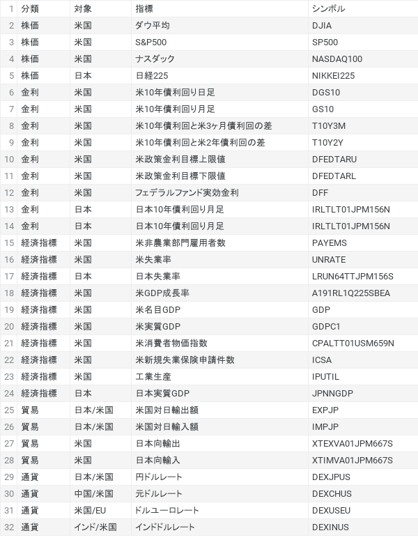
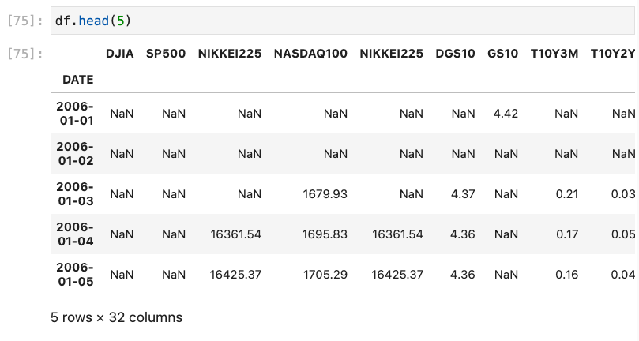
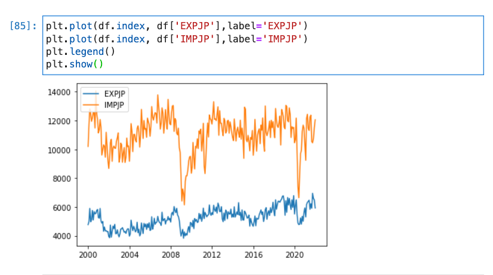

各種経済指標はここから取得ができる。代表的なものを抜き出す。

import pandas as pd
import datetime as dt
import pandas_datareader.data as pdr
start = dt.date(2006,1,1)
stop = dt.date(2022,1,1)
SYMBOLS=['DJIA','SP500','NIKKEI225','NASDAQ100','DGS10','GS10','T10Y3M','T10Y2Y','DFEDTARU','DFEDTARL','DFF','IRLTLT01JPM156N','PAYEMS','UNRATE','LRUN64TTJPM156S','A191RL1Q225SBEA','GDP','GDPC1','CPALTT01USM659N','ICSA','IPUTIL','JPNNGDP','EXPJP','IMPJP','XTEXVA01JPM667S','XTIMVA01JPM667S','DEXJPUS','DEXCHUS','DEXUSEU','DEXINUS']
df = pdr.DataReader(SYMBOLS, 'fred', start, stop)

import matplotlib.pyplot as plt
%matplotlib inline
plt.plot(df.index, df['EXPJP'],label='EXPJP')
plt.plot(df.index, df['IMPJP'],label='IMPJP')
plt.legend()
plt.show()
